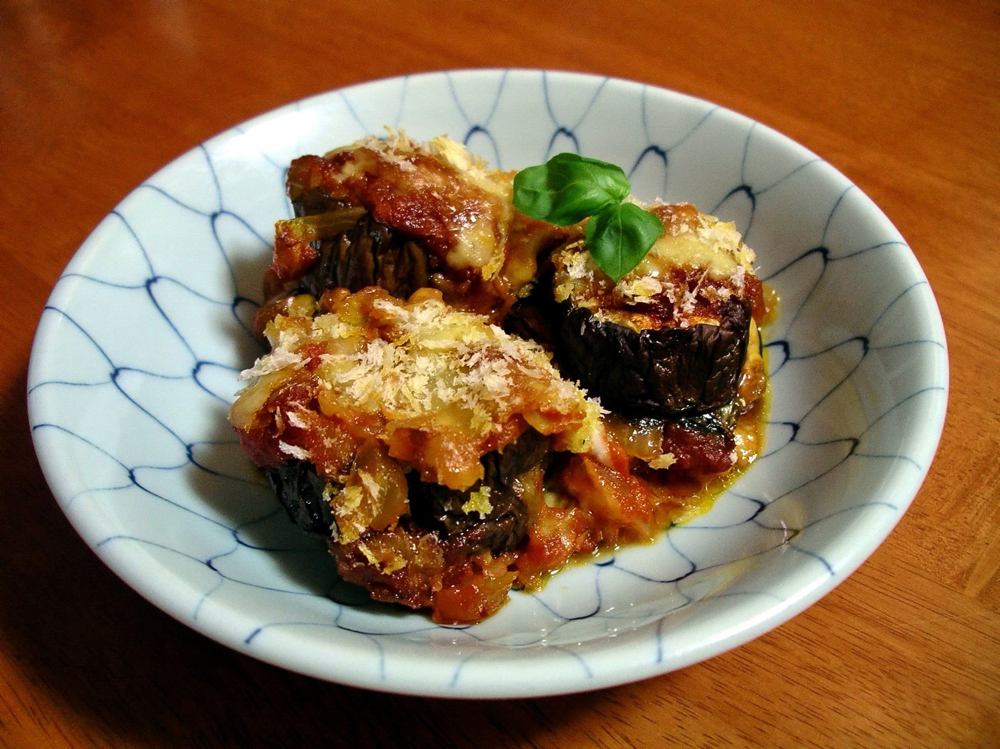

Home
Parmigiana

Description
Eggplant Parmigiana (Parmigiana di Melanzane) is the ultimate comfort food recipe. Fried aubergines/eggplant baked in a dish with tomato sauce, basil, parmesan and mozzarella cheese.
Ingredients
- 2 large aubergines
- 700 g pureed tomatoes (passata), chunky or smooth texture
- 1 white onion
- Small bunch of basil
- 250 g mozzarella cheese, cut into cubes
- 70 g Parmigiano Reggiano cheese, freshly grated
- 1/2 tbsp olive oil
- flour, for dusting
- 125 ml sunflower oil, for frying
- salt and pepper, to season
Steps
- Thinly slice the aubergines then place them in a colander. Sprinkle them lightly with salt and set them aside for 1 hour. This drains off any excess water and helps with frying.
- Meanwhile, make the simple tomato sauce. Finely chop 1 onion and sauté in a pan with the olive oil until translucent and soft but not browned. Add the tomato passata (pureed tomatoes) and a small bunch of basil torn with your hands. Add a pinch of salt and pepper, stir then let it simmer gently for 10-15 minutes. Set aside.
- Rinse the eggplant slices under cold water and pat them dry with a kitchen towel or paper. Lightly dust them with flour, shaking off any excess then fry them in sunflower oil for a few seconds each side, drain on kitchen paper to remove any excess oil.
- Preheat the oven to 180°C. Use a 30x20 cm rectangle dish. You can also use any differently shaped dish with similar dimensions.
- Spoon a small amount of tomato sauce into the bottom of a baking dish and spread it around, this will stop the eggplant from sticking.
- Next add one layer of eggplant to the dish followed by a sprinkling of parmesan cheese, cubes of mozzarella, a sprinkling of pepper and couple spoons of tomato sauce (save 1/3 of the sauce for the final layer). Continue with the next layer until you have one top layer left.
- For the top layer, spoon over the remaining tomato sauce and top with parmesan and mozzarella. Cover loosely with foil and bake for 20 minutes, remove the foil and bake for another 20 minutes until nice and golden and bubbling on top. Let it rest for 5 minutes before serving.